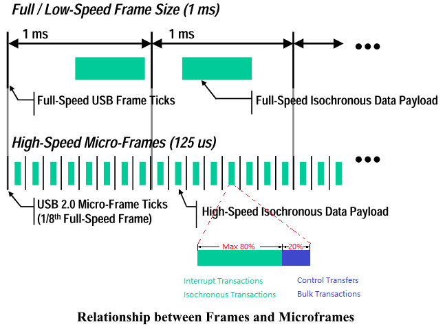

USB 设备枚举简介
一个 USB 设备是否能正常使用，依赖于设备有没有被正确配置。USB 设备在插入端口时会触发枚举，在这个过程中 Host 读取设备的各种描述符，并且下发相应的配置。80% 的 USB 问题是发生在设备枚举过程当中的，所以 USB 开发人员必须对此有详细了解。
背景
USB 使用以下方法来满足多种类型的数据在一条共享通道上传输：
-
时间延迟。从时间维度上把数据传输切成多个时间片，在每个时间片内绝大部分份额 (最多 80%) 优先传输对时间延迟有要求的数据，如Interrupt Transfers、Isochronous Transfers。在时间片剩下的额度内传输对时间延迟没要求的数据，如Control Transfers、Bulk Transfers。 完整性校验。对需要保证数据完整性的数据加上了 CRC 校验，接收端使用 ACK 来知会发送端正确接收，如果没有收到 ACK 发端会尝试重发 3 次。如上图，USB 从时间维度上把数据传输切成多个时间片：
-
Frames。Low-speed 和 Full-speed 的时间切片大小为 1ms，USB 控制器每 1ms 重新调度一下传输。 -
Microframes。High-speed 的时间切片大小为 125us，USB 控制器每 125us 重新调度一下传输。这个时间切片，和操作系统上 Schedule Tick 的概念是一样的。
在数据格式传输上又会进一步细分：-
Transfer。每个时间片的所有传输称之为一个 Transfer，或者为一个 Frames/Microframes。 -
Transcation。根据某次数据传输的目的，一个 Transfer 可以分成多个 Transcation 事务。 -
Packet。数据传输的最小单位，一个 Transcation 可能由多个 Packet 组成。
-
-